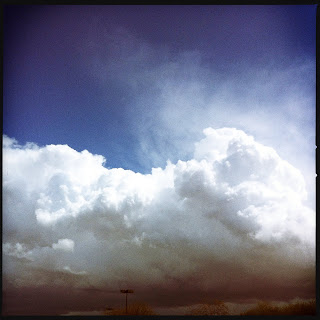

Recovered weblog entry
Layering

There's no such thing as "just a cloud". There's layers of deception and kinetic energy hidden in this shot. Lens: James M
Film: DC

Recovered weblog entry

There's no such thing as "just a cloud". There's layers of deception and kinetic energy hidden in this shot. Lens: James M
Film: DC